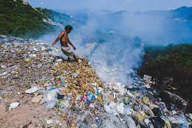
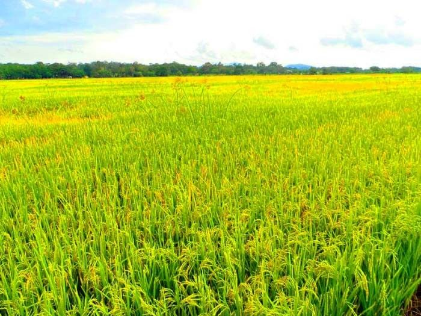

Vấn đề Môi trường
Môi trường tự nhiên đóng vai trò quan trọng đối với sức khỏe và sự sống của mọi loài sinh vật trên Trái Đất. Sự đa dạng sinh học trong môi trường đóng vai trò quan trọng trong việc duy trì cân bằng sinh thái toàn cầu. Sự ôn hòa của khí hậu và nguồn tài nguyên tự nhiên đóng vai trò lớn trong cuộc sống hàng ngày cũng như sự phát triển bền vững của con người và xã hội. Do đó, việc bảo vệ môi trường là trách nhiệm của tất cả chúng ta để tạo ra một môi trường sống tốt đẹp hơn cho thế hệ hiện tại và tương lai.
Giải pháp
Để giải quyết các vấn đề môi trường, chúng ta cần thực hiện những biện pháp cụ thể như sau: Tăng cường công tác bảo vệ rừng và hệ sinh thái: Điều này bao gồm việc ngăn chặn tình trạng phá rừng, tái lập rừng và xây dựng các khu bảo tồn thiên nhiên. Phát triển và sử dụng năng lượng tái tạo: Chuyển đổi từ năng lượng từ nguồn hóa thạch sang năng lượng tái tạo như năng lượng mặt trời, năng lượng gió, năng lượng hydro và năng lượng sinh học. Kiểm soát ô nhiễm và quản lý chất thải: Thúc đẩy việc tái chế, giảm thiểu chất thải và xử lý hiệu quả các loại chất thải để giữ cho môi trường sạch đẹp. Giáo dục và tạo động lực: Tăng cường giáo dục về vấn đề môi trường cho cộng đồng và tạo ra cơ hội để mọi người tham gia vào các hoạt động bảo vệ môi trường.
